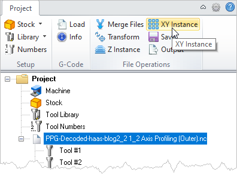
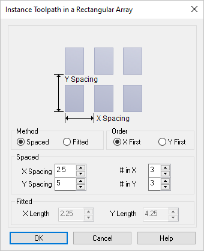

You can create multiple instances of the g-code using this command. This can be useful in situations where you are manufacturing multiple instances of the same part.
|
 G-Code Browser: XY Instance menu item |
1.Select the g-code file from the Project tab that you wish to Z Instance. 2.Select Z Instance from the Project tab menu. The Z Instance dialog will display. 3.Enter the Z Spacing and # in Z values and then pick OK from the dialog. 4.The g-code is instanced in the Z axis. |
You can specify multiple instances in the X and Y directions in two different ways.  Dialog Box: XY Instance Dialog |
Using the Spaced method, you specify the independent X Spacing and Y Spacing values between the toolpaths. The spacing is then used and applied to the bounding box of the part geometry as shown in the picture on the dialog. Enter the number of copies of the instanced toolpath using the # in X and # in Y values. |
Using the Fitted method, you specify a rectangle in which the toolpaths will be fitted by using the X Length and Y Length values. The bounding box of the part geometry is considered when computing the number of toolpaths that can be fitted in the specified space. |
The order of the instancing can also be specified by selecting either X First or Y First. |
Example: The original g-code file is arrayed on the XY plane spaced 2.5 apart in X and 5.0 apart in Y with a total of 3 copies in each direction.
|